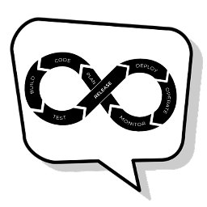

Kubernetes ist eine Plattform, die es ermöglicht, Anwendungen in einem Cluster, ähnlich einem Buchladen, auszuführen und zu verwalten. Ein Cluster besteht aus mehreren Knoten (Nodes), die als Abteilungen des Buchladens betrachtet werden können, wie zum Beispiel Sifi, Romantik, Krimi usw. Jeder Knoten hat einen bestimmten Arbeitsspeicher (freie Plätze in den Regalen) zur Verfügung, der von den Anwendungen genutzt werden kann.
In Kubernetes gibt es auch Namespaces, die ähnlich wie die Abteilungen für Comics und Comichefte im Buchladen organisieren. Ein Namespace kann zum Beispiel für die Comics verwendet werden und ein anderer für die Comichefte.
Eine Anwendung, die in Kubernetes ausgeführt wird, wird als Pod bezeichnet. Ein Pod kann verglichen werden mit einem Comicbuch, das in den Regalen des Buchladens platziert wird. Ein Pod ist erst bereit, wenn es ein Preisschild erhalten hat.
In Kubernetes gibt es auch die Möglichkeit, die gewünschte Anzahl von Pods für eine bestimmte Anwendung festzulegen. Dies kann verglichen werden mit der gewünschten Anzahl von Comicbüchern, die im Regal platziert werden sollen. Wenn die gewünschte Anzahl nicht erreicht wird, kann Kubernetes automatisch neue Pods erstellen, um die Anforderungen zu erfüllen.
Team DevOps-Daemons
Kapitel 26
Kubernetes II